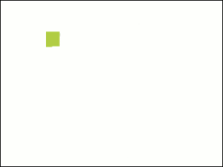

Constructing a Language Comprehension Framework (Learning Japanese from Scratch)
02/17/2019
I often get asked, "How do you learn Japanese?"
I think many people get frustrated trying to learn Japanese.
My past self included. I tried, failed, tried, failed, and tried again.
Although there is an abundance of information on the internet, it typically lacks the perspective
of a monolingual English-speaking adult. This past year, I was able to achieve an
elementary Japanese proficiency (JLPT N5), without the aid of a class or teacher. Here, I'd like to share my
experience.
There are a few traps (not that kind :P) to be mindful of when learning:
-
Trying to learn by memorizing phrases - "natural" language learning
I have tried resources like Rosetta Stone and DuoLingo that attempt to teach by having users memorizing
words and phrases given visual cues. I've found they are not useful resources for learning, because they lack
context from an English speaker's perspective. As a native English speaker, you've already built
a framework for understanding the world. Grammar and vocabulary should be taught in relation to that
existing framework. Mindless unrelational memorizing is impractical.
Trying to avoid written Japanese (kana + kanji)
If you are trying to learn Japanese without understanding the written language,
you are making it unnecessarily hard on yourself. The more points you have (auditory, visual, kinesthetic, tactile), the easier
it is to relate to your mental framework.Believing that you are unintelligent and cannot learn Japanese
It does not take a genius to learn Japanese. It is hard work, no doubt, but you can do it.
Now, I will attempt to break down the steps required for learning Japanese.
Granted, there is some variability in individual learning styles, and this may not be perfectly suited for you.
Constructing your language comprehension framework:
Building blocks:
Before learning to speak Japanese, it is crucial we understand the basic building blocks of the language.
Unlike English, Japanese has a rather defined set of sounds that are captured by the kana syllabary.
Hiragana and Katakana each consist of 46 basic kana characters with 71 including diacritical markers (symbols that change the pronunciation
of some characters) and 102 if you include combined kana.
Another writing system in Japanese, kanji, is based on Chinese characters. It consists of over 85,000 characters, but before you panic,
only about 2,100 are typically used. Kanji sticks to the same sounds present in kana, however the same character often has multiple readings
depending on its context.
If you are like me when I started, the symbol あ probably doesn't mean much to you right now.
You may be wondering:
How can I memorize all of this? Why are there so many symbols? Why is this so complicated?
Well, one key is to create as many relational points as possible.
This is done through multiple types of feedback:
-
Tactile
Write each kana character in a consistent and proper stroke order.
Type each character on a keyboard (Input Method Editor [IME] on Windows/Linux, Gboard on Android).
-
Visual
Distinguish the kana character from others, recognize that the character has been correctly constructed.
-
Kinesthetic/Vocalization
Say the character aloud as you write it.
-
Auditory
Listen to the pronunciation of the character as it is written, and yourself pronounce it.

An excellent resource for practicing on mobile devices is WriteIt! Japanese, available on Android
and iOS. This is a great place to start because it incorporates all types of feedback and it's free.
Another resource I recommend for typing practice is Quizlet (also free ^_^):
The second key is repetition.
I recommend practicing with WriteIt! and Quizlet until the characters feel natural to you.
Recognize, the relatively little effort required to read the words on this page in English.
This will take time, but it is absolutely crucial to lay a strong foundation with kana.
One good measurement for progress is to time how long it takes to work your way through the entire hiragana and katakana
lists on Quizlet or WriteIt!. Log your times, generate some graphs, and visualize your progress.
Spaced repetition techniques may help you study more efficiently.
Now that you've built a strong basis for your framework, it's time to utilize some Japanese learning resources.
-
Wanikani is an excellent tool for learning Kanji and vocab. It divides learning into 3 steps and incorporates
a spaced repetition system for more efficient learning.
- 1. Radicals - an English name that is assigned to a building block common in multiple kanji.
- 2. Kanji - characters composed of one or more radicals.
WaniKani provides a pneumonic involving the English names of the radicals which compose the characters.
- 3. Vocabulary - a combination of kanji and kana characters that forms words.
There are 60 levels overall. The first 10 cover all kanji on the N5 exam. The first 3 levels are free.
-
Genki is the defacto textbook for learning Japanese.
It provides short stories at the beginning of each lesson that incorporate new vocabulary and grammar concepts.
All grammar explanations are in English, and English translations are provided for all vocabulary.
There are plenty of exercises which reinforce the concepts in each lesson, and there is an accompanying workbook for additional
practice.
The book also contains some insights into Japanese culture and how the language is used in different contexts.
-
Bunpro teaches Japanese grammar to the Japanese Language Proficiency Test (JLPT).
It provides contextual examples of grammar concepts in simple sentences and provides good references
which explain the concepts (Tae Kim, Japanese Ammo).
The lite version is free.
-
Grammar, Vocab, Short Sentences - Lingo Deer (Android +
iOS)
Lingo Deer provides grammar explanations in English along with some applications in bite sized lessons.
Lingo Deer is free.
With all of this information and enough dedication, you are ready to embark on your Japanese learning journey.
Best of luck.
B Drumheller